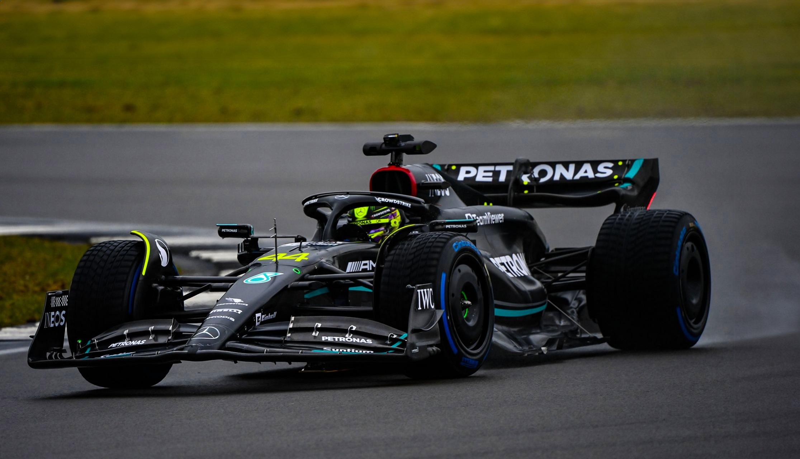

About Formula 1
Formula 1 is considered to be one of the worlds most popular motorsport series. It has been taking place almost every single year for just over 70 years, with millions of fans attending races throughout the season.
In the sport, there are ten teams who participate, each with two drivers. Every team within the sport has the same end-goal, to try and win the constructors championship.
This is not an easy task for a team, as every other team on the Formula 1 grid wants that spot at the top of the constructors table. Teams will spend countless months and years developing their cars, every change that they make giving them a tenth, or even just a hundereth of a second advantage above their rivals.
Go to the Official Formula 1 Website ->